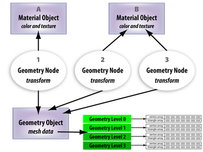

Geometry Internals
From C4 Engine Wiki

In the C4 Engine, every piece of geometry in a world is represented by a generic data structure containing all kinds of different information. This article describes the various types of information that is stored, how it's arranged, and how it's used by the engine.
Contents |
Geometry Node
Each separate geometry in a scene is represented by a geometry node. The geometry node contains the transform for the geometry, but it does not contain any of the geometrical data describing the triangle mesh that is actually rendered. This information is stored in a geometry object. Multiple geometry nodes may reference the same geometry object, and this is the mechanism through which instancing works in the engine. The mesh data for a particular geometry can be stored once, and referenced by several geometry nodes to create identical copies throughout the world.
The geometry node also stores references to the material objects used by the geometry. In the case that multiple geometry nodes reference the same geometry object, each instance of the geometry can use a different set of materials.
Geometry Object
A geometry object is a container for all of the vertex and triangle information pertaining to a geometry. The mesh data is stored in one or more geometry levels, each of which represents a single detail level of the geometry.
The geometry object also stores information about the different surfaces belonging to a mesh. A surface is a collection of triangles that share the same material, the same tangent space domain, and the same texture coordinate generation domain. For example, a cube has six surfaces because each side of the cube has an independent set of normals and can have an independent material. Individual surfaces can be selected and altered in the World Editor using the Select Surface tool.
Surfaces are grouped into segments that represent each contiguous set of triangles that can be rendered using the same material. The number of segments in a geometry is equal to the number of hardware rendering commands needed to draw the geometry.
Collision data for a geometry is stored in the geometry object. The collision data can be generated from any of the available levels of detail.
Geometry Level
A geometry level is the data structure in which all the geometrical information about a single level of detail is stored. It contains the vertex and triangle arrays that are needed to render the geometry, as well as several additional arrays that are used by the engine for things like skinning. The Mesh class also contains many functions that can generate data needed by the engine, such as the tangent array.
The following table gives brief descriptions of each type of array that can appear in the mesh representing a geometry level.
|
Array Identifier |
Element Type |
Description |
|
|
|
The array of 3D vertex positions. |
|
|
|
The previous vertex positions, used for per-vertex motion blur on skinned meshes, rope, and cloth. |
|
|
|
The normal vectors. |
|
|
|
The tangent vectors, used for bump mapping. |
|
|
|
The primary texture coordinates. |
|
|
|
The triangle array. Each triangle holds three 16-bit indexes into the vertex arrays. |
|
|
|
The surface index corresponding to each vertex. |
|
|
|
An array containing the starting index and triangle count for each contiguous set of faces having the same material. |
Vertex Data
The vertex and index data for any geometry, including terrain, is stored in the Mesh objects owned by the GeometryObject that is referenced by a particular geometry node. If you have a pointer to a Geometry node (for example, a TerrainGeometry node), then you can retrieve a pointer to its GeometryObject by simply calling GetObject() like this:
const GeometryObject *object = geometryNode->GetObject();
Once you have this pointer to the GeometryObject, you can get a pointer to the Mesh object for the highest level of detail with this call:
const Mesh *mesh = object->GetGeometryLevel(0);
You can then access the vertex and triangle index information as follows:
int32 vertexCount = mesh->GetVertexCount(); int32 triangleCount = mesh->GetPrimitiveCount(); const Point3D *vertexArray = mesh->GetArray<Point3D>(kArrayPosition); const Triangle *triangleArray = mesh->GetArray<Triangle>(kArrayPrimitive);